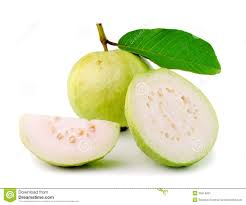
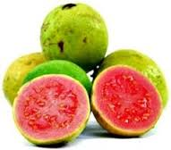
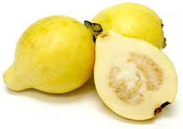
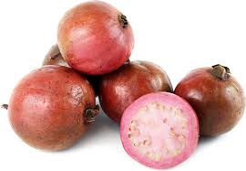
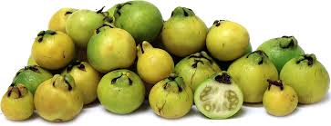

|  |
White flesh is succulent, sweet, and aromatic. Skin is light yellow, sometimes blushed with red |
|  |
Pink flesh is smooth to grainy in texture, mild to sweet. Skin turns from green to yellow. Attractive green foliage. Very fragrant. |
|  |
Small to medium-small, roundish fruits. Skin light yellow, slightly blushed with red. Flesh creamy white, very sweet, fine-textured and excellent for dessert. Seed cavity small with relatively soft seeds. |
|  |
Red colored guava with pink-red flesh. This variety is unique not just for its fruit, but for its foliage also, which is tinted a deep red color. The flowers are bright pink. The Red Malaysian guava is often grown for ornamental purposes as well as fruit. |
|  |
Yellow fruit, similar to the strawberry guava except fruits are often slightly larger (1-2"). Flesh is yellow, very fragrant, with the suggestion of a lemon-guava flavor. Small bush or tree to 20-25 feet, although often much smaller. The frilly white flowers are often borne a few times a year, concentrated during warmer months. |